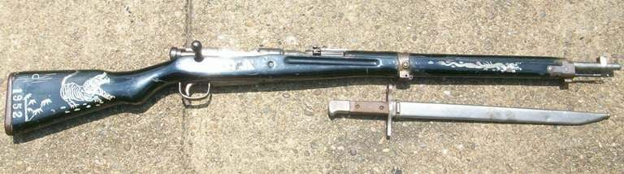
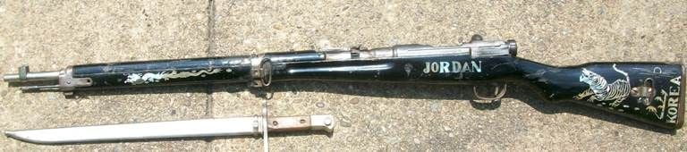
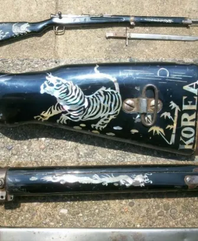
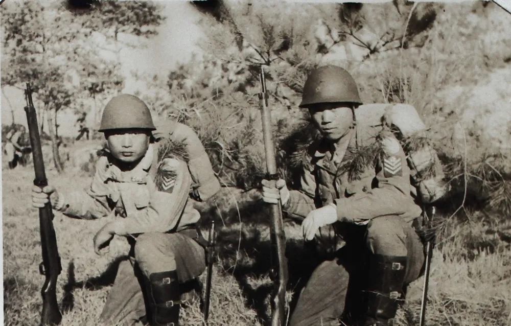

나전칠기 장인한테 부탁해서 소총을 장식했음 ㅅㅂㅋㅋㅋㅋㅋㅋㅋㅋ

(해당 사진은 남한측 국방경비대의 사진)
참고로 해당 소총은 일본군의 '99식 소총'으로 국군은 물론 북한군도 사용했던 소총임 ㄷㄷ...



나전칠기 장인한테 부탁해서 소총을 장식했음 ㅅㅂㅋㅋㅋㅋㅋㅋㅋㅋ

(해당 사진은 남한측 국방경비대의 사진)
참고로 해당 소총은 일본군의 '99식 소총'으로 국군은 물론 북한군도 사용했던 소총임 ㄷㄷ...
전쟁통이다보니 칠기장인이 호구지책으로 해줬을지도...
파견군은 기념품을 많이 사가는데 그걸 알고 부대 앞에 기념품 파는 군장점이 많지ㅋㅋ
조던건 ㅎㄷㄷ
북한군이 들고 있던 건 만주에서 관동군들이 소련군 보고 빤쓰런 치면서 버리고 간 소총들인가보네
일본 패망 후에 일제는 철수할 때 병기창들을 파괴하고 떠났는데 당시 병기창에 일하고 있던 조선인들이 있었음. 인천 병기창이 대표적인데 조선이 이제 광복을 했으니 반드시 무기가 필요할 것이고 인천 병기창이 특히 중요하다고 해서 일제 명령으로 기계를 파괴하고 서류와 도면을 파기하려는 것을 당시 병기창에서 일하던 조선인들이 막음. 일제가 시도하려고 하면 자체적으로 자경단을 만들어서 막았고 결국 이게 해방 후에 한국군의 무기 조달하는 것에 막대한 기여를 함.

어디서 본건데 일제패망후 무장해제과정에서 소련군은 일본군무기를 전부 회수했고 그게 북한군이 쓰게됬는데
미군은 이거 재활용할 인건비도 안나오겠다 싶었는지 바다에 싹다 수장시켯다 하던데.
저거 한정 잘 닦고 보수해서 액자 같은거 해서 걸어놓으면 간지는 오지게 나겠다.
북한군이 아니라 중공군한테서
노획했을 가능성이 높음
소련은 모신나강을 무려 3천700만정이나 찍었다고 함
그래서 전쟁끝나고 존나게 남아서 처치 곤란이라
중공과 북한에 퍼줘서
두나라 모두 전군을 그걸로 무장하고도 남았음
근데 한국전쟁에 동원된 중공군은
정규군이 아닌 명목상 의용군이었고...
사실은 의용군도 아니고 국민당군 포로들을
강제입대시킨 경우가 제일 많음.
그래서 전쟁때 잡힌 중공 포로 2만명중
무려 1만4천명이 중국으로 안가고 대만으로 감
하여간 정규군이 아니라 정규군 군복도 안입히고
무기도 정규군 무기를 주지않고
국닌당군이 버리고간 중국제 중정식 소총이나
관동군이 버리고감 일본군 99식 소총을 쥐어주고
전쟁에 내보냈음
전쟁중 사진을 봐도
중정식 총이나 99식 총을 쓰는 북한군은 찾기 힘들고
중공군은 찾기 열라 쉬움
게다가 개머리판에 1952라고 적혀있는데
북한군은 사실한 1950년 가을 무렵 괴멸적 타격을 입었고 병력이 거의 남아 있지 못함
전쟁초 북한군 19만이었는데
저 당시 남한 포로수용소에 있던 포로만 11만명이었음
남한에서 의용군을 징집했다고 하지만
죽은놈 다친놈 빼면 1951년 이후
북한군은 거의 없다고 봐도 무방. 총을 노획했다면 중공군의 것이라고 봐야함
칠기 장인이 많았었나...